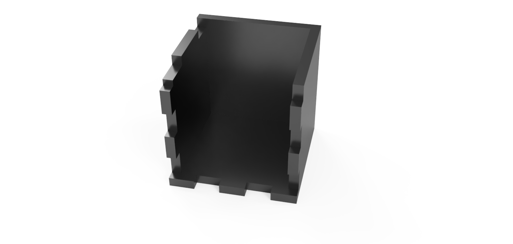
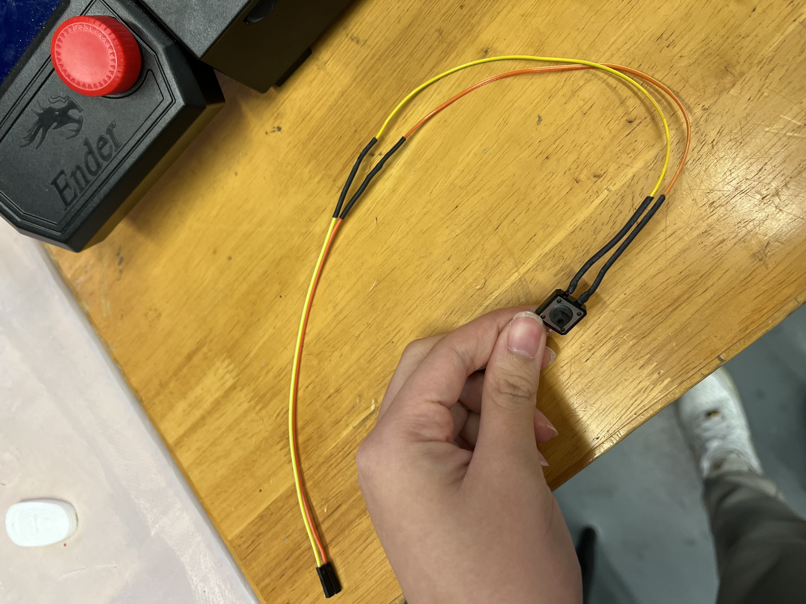
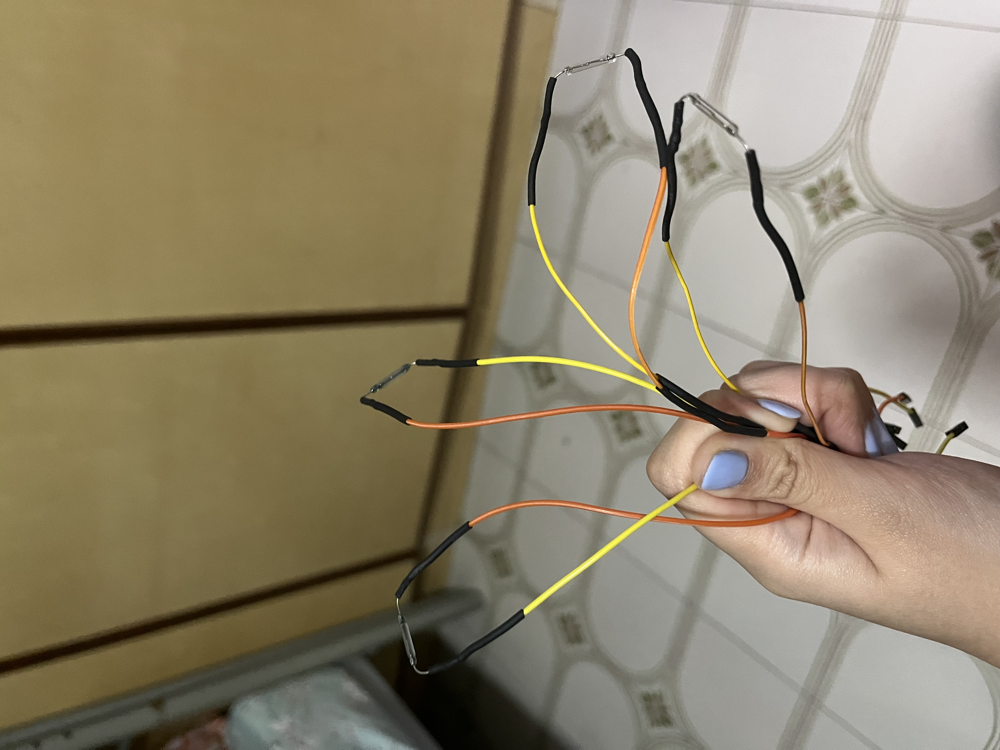
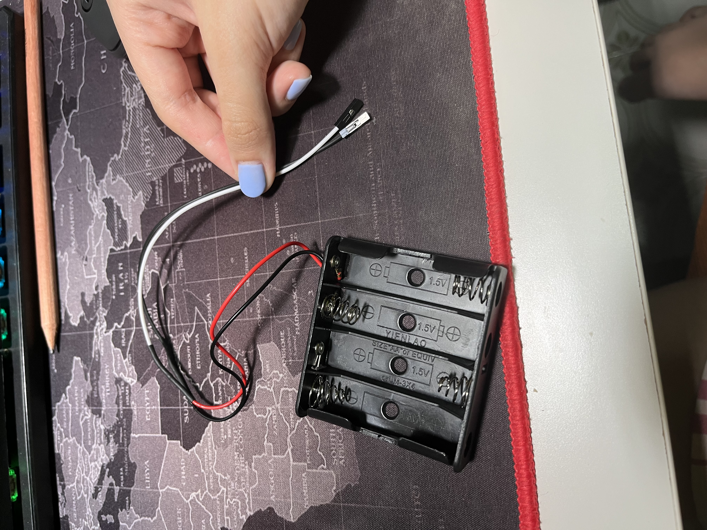
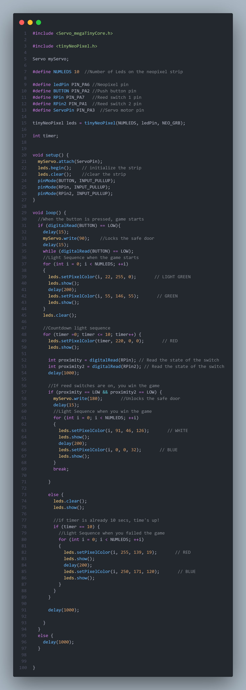
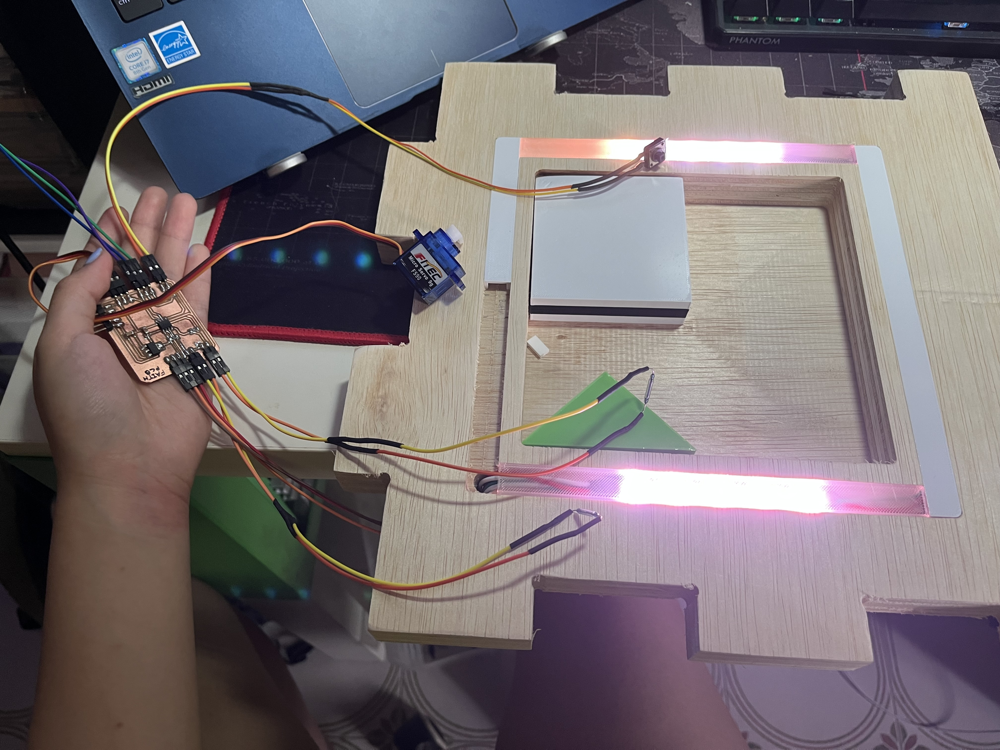
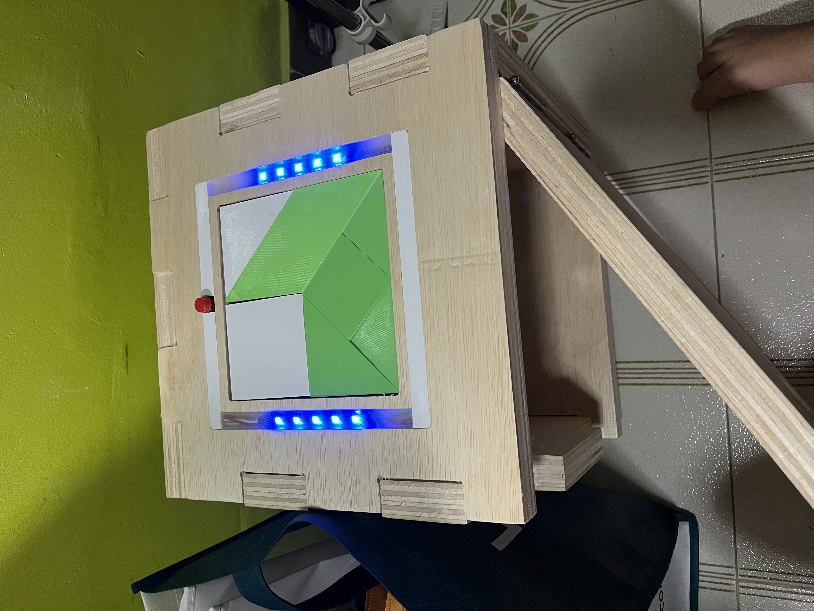
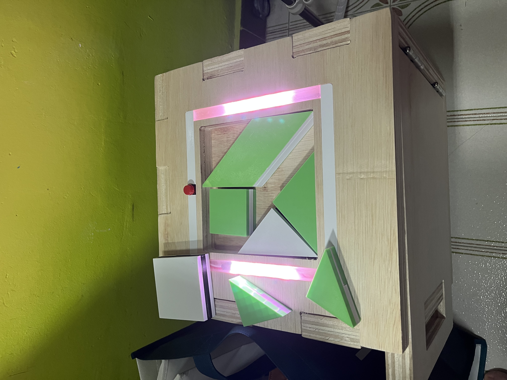

Project Idea
After getting some inspiration from ILTMS escape room puzzle and KOR escape puzzle box, I decided to make a Solve the puzzle safe box. Will you be able to solve the puzzle before the time runs out to uncover what is inside the safe box? It sounded like a cool mini game to me to play with friends like an actual escape room but also a fun way to store some things in the safe box that someone has to figure out how to open it.
I made 2 sketches of how my safe box will look like and end up going with the second sketch for the design of the safe box.


I only had doubts about what type of microcontroller I would be using as I have quite a number of inputs and outputs. So, I consulted Mr Steven to help me figure out what microcontroller to use. He helped me draw out and visualize the inputs and outputs that would be connected to the microcontroller and from there we were able to figure out that a ATtiny412 microcontroller would work just fine.

Materials
| Quantity | Description | Cost |
|---|---|---|
| 1 | ATtiny412 microchip | SGD 0.89 |
| 3 | SMD 10K Resistors | SGD 35.90 for 1 long cut tape of resistors |
| 2 | SMD Capacitor Unpolarized | SGD 0.24 per Capacitor |
| 1 | SMD AMS1117 Voltage Regulator | SGD 0.61 |
| 8 | SMD Right Angle Male Header (5 pieces of 2 pin header & 3 pieces of 3 pin header) | SGD 4.35 for 1 row of 40 pins |
| 2 | Reed Switch | SGD 1.50 per switch |
| 1 | Push Button | SGD 0.50 per button |
| 1 | Slide Switch SPDT | SGD 1.10 |
| 2 | Neodynium Magnets | SGD 9.74 for 10 pieces |
| 1 | Battery Holder | SGD 1.20 |
| 4 | AA Batteries | SGD 1.80 for 4 Batteries |
| 1 | Servo Motor FS90 | SGD 5.57 |
| 22 | Female to Female Dupont cables | SGD 3.00 for 40 pieces |
| 3 | Male to Female Dupont cables | SGD 3.40 for 40 pieces |
| 1 | White Acrylic 3mmx300mmx500mm | SGD 26.99 |
| 1 | Normal Plywood 25mmx1120mmx1600mm | SGD 120.05 |
| 2 | Strips of neopixel LEDs (5 LEDs in each strip) | SGD 7.93 for 1 meter strip of neopixels (30 Leds) IP65 |
Fabrication Techniques
| Technique | Makes |
|---|---|
| CAD Design | Safe Box Design, Electronic Box Design, Puzzle Pieces Design, Servo Motor Lock & Case Hole Piece Design, Tracks Design |
| PCB Fabrication | Electronics Design |
| CNC Milling | Safe Box |
| 3D Printing | Puzzle Pieces, Servo Motor Lock & Case Hold Piece, Tracks |
| Laser Cutting | Electronic Box |
| Processing System | ATtiny412 |
| Input Devices | Push Button, Reed Switches, Slide Switch |
| Output Devices | Neopixels, Servo Motor |
| Power | x4 AA Battery Holder |
CAD Modeling
Safe Box
Using Fusion360, I modelled the safe box 300x300x300 with a thickness of 18mm. It has 3 parts:

- Puzzle Top Piece: This is where the neopixels and button will be attached to on the groove and the big hole is where the puzzle pieces be placed for the user to play.
- Door: Where you would be able to open and close the safe box which will have a lock piece behind so that the servo motor will be able to lock it into place.
- Box: This is where you would store maybe the reward after figuring out how to put the puzzle pieces together or you can store all kinds of things. 


Electronic Box
I started to model a electronic box to store all the microcontroller and everything inside and it will be placed in the safe to kinda cover the electronics that I'll be using. Its a 215x215x25mm box with a thickness of 3mm. I also made a hole on one of the sides of the box that will feed the wire of the servo motor through and a hole for the slide switch to on and off the electronics.

Puzzle Pieces
Using a Puzzle template, I modelled the puzzle pieces using Fusion360. But I decided to make the puzzle pieces abit more interesting by making them like small puzzle pieces too that will be later printed out in different filament colors. It was also a nice way to hide 2 magnets on two different puzzle pieces which will make the player or user confused which pieces have the magnet and which does not.
Puzzle Template


Servo Motor Hold and Lock Piece
I made a hold piece to hold the servo motor in case in the future I need to swap out the servo motor for whatever reason and I can do it easily by taking it out of the hold piece.

Using the measurements of the servo motor wing, I made a lock piece that when it turns, it will lock onto the lock piece which will lock the door.

Tracks for neopixels and button
I made a track that will be able to fit the reset button as well as allow wires to feed under it that will be hidden.I also made another track to allow wires through and cover the wires.
Another type of track that I made is to be able to fit the neopixels and also be able to diffuse some light from the neopixels.

PCB Fabrication
So I started drawing out my schematic on EAGLE software to design my microcontroller with the components ill be using. Here is the schematic and PCB drawing:


This is how the traces and outline look like:


I millied the traces using a new 30 degree endmil and new outline endmil and it turned out looking great and I didn't have to sand the burrs because the endmil is new.
Endmills used


But there were some parts of the traces that was not cut properly so I used a pen knife to separate the parts:

Electronics
PCB Board
I soldered the PCB that I have milled out andIi slowly soldered each component making sure that I used the correct components and following my PCB design to solder all the components onto the board which I later used a digital multimeter to test making sure the VCC and GND are not shorted together and none of the other connections are shorted with each other. I then labelled at the back of the board what are the connections and where the connections are.
Push Button
It was easy to solder the button and I used 4 wires to make the connection longer so that it will be easier for me to plug into my PCB board. one side is input (orange wire) and the other is GND (yellow wire).
Reed Switches
I soldered both reed switches by also using 4 wires to make the wire longer and one side is input (orange wire) and the other is GND (yellow wire).
I then decided to solder two more extra reed switches as when I was testing out the reed switches I realized that the reed switches I bought from shoppee was not as strong as the ones that I bought from sim lim tower.
Neopixels
The neopixels was abit hard to solder as I had to first cut the long strip into 2 with both 5 led neopixels on each strip and solder them together using wires which will then be placed at the groove of the top part of the safe box. I made the wires long enough that it will be able to go around the groove and have enough length to use it to connect to the pcb board. My connections are VCC (red wire), Input (orange wire) and GND (brown wire).
Battery Holder
For the battery holder, I soldered 2 wires which the black is GND and the white is VCC.
Slide Switch
I soldered 4 wires to extend the length of the slide switch so that is long enough and soldered the wires to 2 terminals of the slide switch.

CNC Milling
So when doing the CNC, I had to change the thickness of my plywood from 18mm to 24mm as that is what the school had. Here are some pictures on the day when I did the CNC:


After cutting the CNC safe box I realized that it could not fit the finger joints together properly and that the thickness of the wood was actually 25mm than 24mm but that was ok as it will just be slightly out by alitlle. So using the sander I tried to sand the sides so that the finger joints will be able to fit well when putting them together later on.

Laser Cutting
Using a A3 3mm white acrylic piece, I laser cut my electronic box which turned out looking great on the first try.


3D Printing
I used my Ender 3 V2 3D printer at home to print all my 3D printed pieces.
Puzzle Pieces
- Filament Color: White, Black and green
- Infill: 10%
The first print I just tested on one of the puzzle pieces with the magnet hole and it looked great but the magnet could not fit and I was a afraid the height of where the magnet is might not be able to be detected by the reed switch so I went back to Fusion360 and modified the height as well as the magnet hole size.

Then I printed the second time together with another piece, I decided to do something special in a way because my printer had a feature where I could change the filament where the printer would stop and ask to load a different color filament midway through printing so there is 2 different filament colours on the puzzle pieces to look like a sandwich abit but this second try was better and the magnet was able to fit into the magnet hole. I then proceed to print out the rest of the puzzle pieces which all turned out great. Until I ran out of green filament when printing the last 2 puzzle pieces so I used a black filament to replace the green filament. This is all the finished puzzle pieces.

Servo Motor Hold and Lock Pieces
- Filament Color: White
- Infill: 15%
The first print for the servo motor hold piece fit perfectly but the lock piece was too small of a gap which I needed to make the gap bigger so I went back to Fusion 360 to make the changes
Passed Hold Piece

Failed Lock Piece

On the second print, the lock piece it turned out better than the first print.

Tracks for Neopixels and Button
- Filament Color: White and Transparent
- Infill: 5%
The first print for the Track piece for the button, top of the track piece was too thick to let any wires through and I needed to round the corners as I had rounded corners on the grooves. So, I went back to Fusion360 to make the changes and probably make the wall thinner too.

But on the second print the track pieces turned out better and it was a nice fit into the groove. I then went ahead and print the other track meant to cover the wires of the neopixels.

Next was to print the transparent track piece that was for the neopixel lights as I wanted to diffuse the lights. The first print for the transparent tracks was a fail as it was a tight fit into the groove so I had to adjust the size of the walls.

But after printing out the second print, it turned out to be a good fit.

Code
Update: Please note everything else is working except the servo motor in the code.
This is me testing the code:
Assembly of Product
Laser Cut Electronic Box
I put together the sides of the electronics box since the lid needs to be removeable. I prepared the surfaces of the acrylic side pieces by sanding it using sandpaper. Then, I glued the sides using acrylic glue and at first I tried using a cotton bud to apply the glue onto the acrylic sides but that didnt work well so I then used a paint brush to apply the glue which worked better.
But later on it started to come off and broke apart so instead I used super glue to glue the pieces back together.


Safe Box
I decided to put together the base and 3 sides first without the door and top side. I used a hammer and cloth the cloth is to make sure that my plywood wont have dents as plywood is soft when i try to hammer it to slide the pieces together and to try to minimize the noise when hammering. While putting together the pieces I had to make sure I was putting them the right way and making sure that it fits which most of the pieces needed more sanding to be able to fit. I used a high grit sandpaper with a file to be able to sand some of the sides so it can fit then I slowly hammer the sides to fit into place making sure that I dont spilt the wood while doing so. The pieces fit together nicely without any glue as it was a friction fit.


Then it was time to put the hinges for the door. I positioned where i wanted to put the hinges then proceeded to drill a small hole where the screw will be able to go in. I first screwed the hinge to the side of one of the side pieces but realized that i should screw it onto the door first before screwing on the side piece so I took it out again and put the hinge on the door first before screwing to the side piece. It managed to fit the door but i had to adjust the left side abit to make sure i can open and close the door.

I was able to then attach the top of the box to the whole safe box after glueing on the electronic box
Glue the Servo Motor Hold and Lock Piece to the safe box
I measured the spacing of where the servo motor would go for the hold and lock pieces and glued them with hot glue.
Puzzle Pieces
I glued each puzzle piece together using super glue and making sure im gluing the right pieces together. and also putting the magnets into 2 of the puzzle pieces with the holes for the magnets and gluing it together too and let them dry.


Wiring the electronics together
I wired up the neopixels to put into the groove slot in the top side of the safe box. Then I put the tracks that I made to cover up the wires. I needed to put a small acrylic at the bottom of the button to make it pop up abit from the groove which I glued using hot glue. I also wired up the push buttons and added the tracks.


I taped the reed switches at the locations of where it is suppose to trigger before glueing the electronic box sides.

I glued the slide switch to the hole of one side of the acrylic that I laser cut using hot glue

Glue the electronic box
I glued the electronic box sides to the bottom part of the puzzle top side using hot glue


I could then finally wire everything up and I hot glue the battery holder so it can stay in place and closed the electronics box.
Final Product
Here is my Solve The Puzzle Safe Box!

How it works?
- Remove the Puzzle Pieces and Press the Push Button to start the Puzzle Game which will lock the safe door. A Green Light Sequence will show.
- The countdown timer will start, you have 10 Secs to solve the puzzle before the time runs out
- If you managed to solve the puzzle, a blue light sequence will show and you will be able to open the safe door 
- But if you did not managed to solve the puzzle, a pink light sequence will show and the safe door will still be locked 


Reflection
What I have learnt?
I have learnt more about what I learnt in class like the PCB milling and CNC as it expanding my knowledge on what I can do in the future or in other personal projects like making my own PCB. I have also learnt about programming the ATtiny412 as it was not easy trying to program it as it works slightly different compared to the Arduino Uno. But throughout this whole elective journey and in the process of doing my Final project I have enjoyed the whole process from start to finish and I look forward to what other projects I can make with the skills that I have learnt and to document it so i'll be able to look back at it one day to see the projects I have worked on and being proud of it.
What I would have done differently or improve?
- Where the door was placed could be better as I only realized it later on that it was on the wrong side.
- I think I could design the safe box better so that I wont have a hard time trying to put the box together
- If I had more time, I would have more time to figure out the servo motor issue with the code.
Presentation Slide